地政学
釜山は朝鮮半島南東端で日本海と対馬海峡に向き、港、鉄道、空港、フェリーが韓国の外向きの回路を作ります。戦争避難、日韓往来、国際物流の記憶が、街の地形と制度に深く刻まれています。海峡政治も近く響きます。

🇰🇷 韓国 / 釜山広域市 / World City Atlas
朝鮮半島南東端で港、山、海峡、魚市場、造船、映画祭、丘陵住宅、海水浴場が重なる都市です。ソウルとは違う海の韓国を、物流と日常の両面から見せます。
都市の骨格
釜山は港だけでできた都市ではありません。山が海へ迫る地形に港湾、鉄道、魚市場、寺院、映画祭、海水浴場、丘陵住宅が折り重なり、韓国南東部の玄関として国内外を結びます。
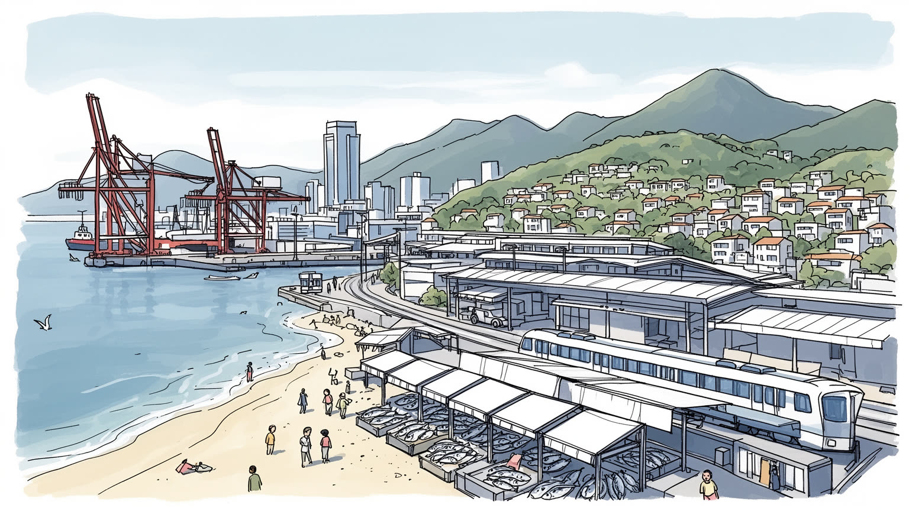
釜山は朝鮮半島南東端で日本海と対馬海峡に向き、港、鉄道、空港、フェリーが韓国の外向きの回路を作ります。戦争避難、日韓往来、国際物流の記憶が、街の地形と制度に深く刻まれています。海峡政治も近く響きます。
コンテナ港、造船、機械、水産、市場、観光、医療、大学が釜山の経済を支えます。荷役、運転、整備、魚の選別、飲食、宿泊、清掃の仕事も多く、港の速度と市場の労働が近くで響き合います。技能も厚い都市です。
仏教寺院、教会、市場の祭礼、BIFF、海辺の音楽、方言、屋台の食文化が釜山らしさを作ります。海に近い開放感と山腹の近所づきあいが、ソウルとは違う韓国都市の表情を見せます。祈りも街に深く静かに残っています。
海雲台や広安里は観光の顔ですが、住民には坂道、家賃、高齢化、台風、通勤、漁業の変化が日常です。海岸の夜、温泉、市場、寺院、ロッテ野球観戦と買い物が近距離で重なります。旅と暮らしが深く接しています。
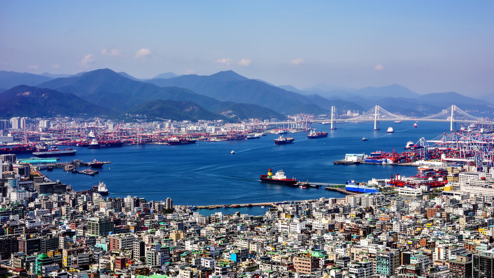
釜山の地形は、都市の性格を最初から決めています。山地が海岸へ迫り、平地は港、鉄道、道路、市場、住宅に細かく分けられます。中心部の南浦洞、チャガルチ、釜山駅周辺では、港湾施設と商業地が近く、背後の丘には密な住宅地が上がっていきます。西側には洛東江の河口と金海方面の低地があり、東側には海雲台や機張の海岸が観光と新興住宅の軸を作ります。都市は一枚の平野へ広がらず、湾、岬、峠、トンネル、橋をつないで成長しました。そのため地図上の距離が短くても、坂と海、港湾用地が移動を複雑にします。港は世界とつながる開いた場所ですが、フェンスや倉庫で市民生活から切り離される面もあります。海辺の眺望、山腹の路地、コンテナの岸壁、地下鉄の走行音を一緒に聞くと、釜山が自然地形と物流装置の間で生活空間を作ってきた都市だと分かります。新しい橋やトンネルは地区間の距離を縮めましたが、同時に自動車への依存も強めます。坂の上の住宅、河口の工業地、海辺の観光地では必要な交通が異なり、災害時の避難条件も違います。釜山の都市計画は、限られた平地をどう使い、海への眺めと港の機能をどう両立させるかという問いに常に向き合っています。山と海が近いことは景観の魅力であると同時に、土地利用の衝突という現実です。潮の匂い、坂道の息切れ、港の警笛まで含めて、公共施設や避難所の配置を考える都市です。
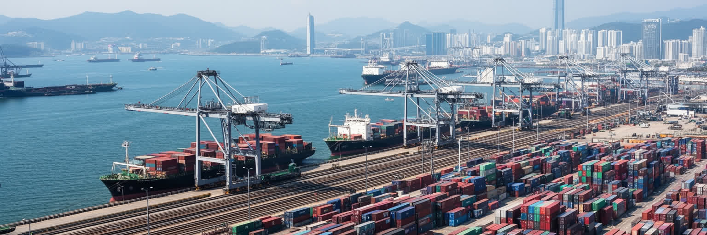
釜山港は韓国最大級の海上物流拠点であり、東アジアの製造業、消費市場、太平洋航路をつなぐ結節点です。コンテナ船は自動車部品、電子機器、化学品、機械、食品、日用品を運び、港の背後には倉庫、冷蔵施設、通関、保険、船舶代理店、修理、トラック輸送の仕事が広がります。新港の整備は大型船に対応するための投資であり、旧港周辺の再開発とは違う時間で動きます。港の効率は都市の誇りですが、荷役労働、長距離運転、夜間勤務、騒音、大気汚染、交通渋滞も伴います。港湾労働は機械化で変わり、熟練と雇用の安定が課題になります。釜山の国際性は空港の案内板だけでなく、税関の書類、港湾無線、冷凍倉庫、船員の宿、トラックの待機列に現れます。海運が滞れば韓国経済全体に影響するため、釜山は地方都市でありながら国家の供給網を支える都市でもあります。港湾の競争は上海、寧波、シンガポール、横浜などとの比較で語られますが、住民にとっては大型車の通行、安全、雇用の質として感じられます。自動化が進んでも、緊急時の判断や保守、積み替えの調整には人の経験が必要です。世界の消費者が意識しない箱の流れを、釜山の岸壁と道路が毎日受け止めています。港の背後で暮らす人にとっては、道路整備、排気、騒音、勤務時間が生活条件になります。物流都市の成功は、早く運ぶ力と同時に、周辺地域へ負担を偏らせない調整力で測られます。
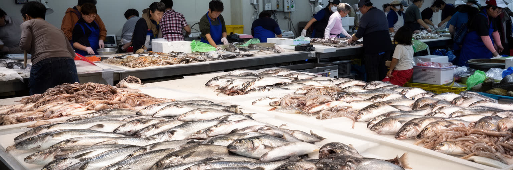
チャガルチ市場に象徴される釜山の食文化は、海と労働の距離が近いことで成り立ちます。水槽、競り、包丁、乾物、屋台、食堂が連なり、観光客は新鮮な魚介を味わい、住民は日々の買い物や外食に市場を使います。刺身、焼き魚、海鮮鍋、ミルミョン、テジクッパ、シアッホットクは、港町の食欲と移住の歴史を映します。市場は単なる観光施設ではなく、卸売、運搬、氷、清掃、加工、接客、会計を担う人々の職場です。高齢の商人、外国人客、若い旅行者、近所の家族が同じ通路を行き交い、方言と値段交渉、店先のSNS投稿が空間のリズムを作ります。一方で、水産資源の変化、衛生基準、家賃上昇、後継者不足、観光化の圧力は市場の姿を変えています。釜山の食を見ることは、皿の上の味だけでなく、港から市場、食堂、家庭へ届く手の連鎖を見ることです。朝早く働く人の食堂、夜の路上屋台、子ども連れで入るスープ店は、観光名所よりも生活の時間に近い場所です。チャガルチの潮と魚の匂い、国際市場の衣料品、南浦洞の買い物客、湯気の上がるテジクッパが同じ徒歩圏で混ざります。水産物の産地や季節が変われば、値段も献立も変わります。市場の通路には、女性商人の経験、家族経営の粘り、外国語対応への工夫も残ります。住民が昼食を取り、夕飯の材料を選ぶ機能が失われれば、港町の食文化は薄くなります。
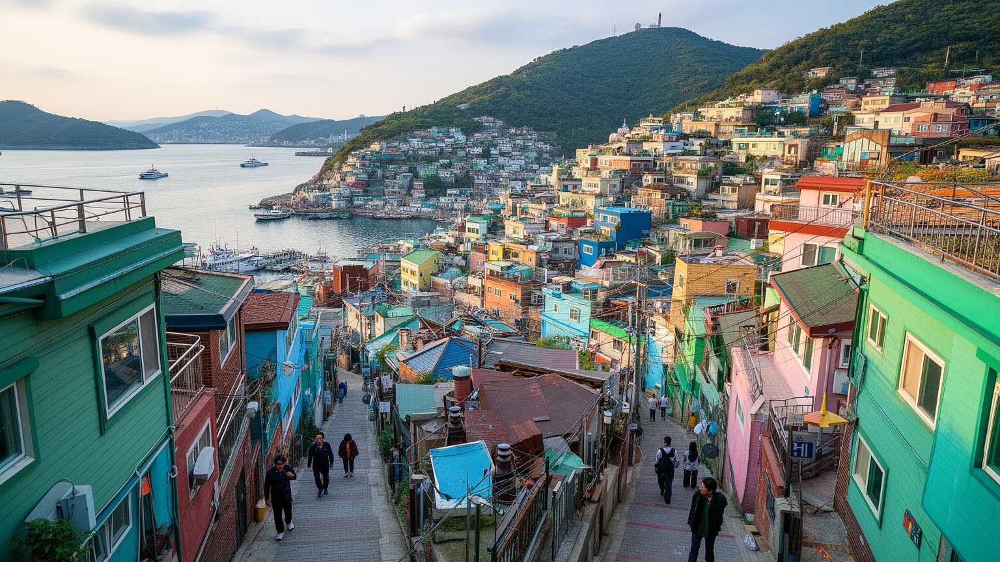
釜山の山腹住宅地は、美しい眺望だけで語れない歴史を持ちます。朝鮮戦争期に多くの避難民が集まり、限られた平地を避けるように斜面へ住まいが広がりました。甘川文化村のように観光地化された場所では、色のある家並みと路地が写真の対象になりますが、その背景には急な階段、狭い道路、老朽住宅、水道や暖房の改善、近隣の助け合いがあります。坂道は海を見せる一方、高齢者や障害のある人にとって移動の負担になります。再生事業は壁画やカフェで注目を集めますが、住民のプライバシー、家賃、騒音、生活用品の配送も考えなければなりません。観光客が歩く路地は、誰かの玄関であり洗濯物の場所です。釜山を読むには、港の巨大な機械と同じくらい、山腹の小さな階段を見つめる必要があります。そこには戦争、貧困、共同体、老い、観光の期待が折り重なっています。斜面の生活は、バス停までの距離、冬の風、救急車の入りやすさ、買い物袋の重さとして経験されます。古い家を一律に壊せば記憶は失われ、保存だけを優先すれば住民の不便は残ります。必要なのは写真映えする景観づくりではなく、住み続ける人の移動と安全を支える細かな更新です。階段の手すり、休める小広場、地域バス、空き家の改修は小さな施策に見えて、生活を続ける条件になります。路地の声を聞く姿勢が必要です。
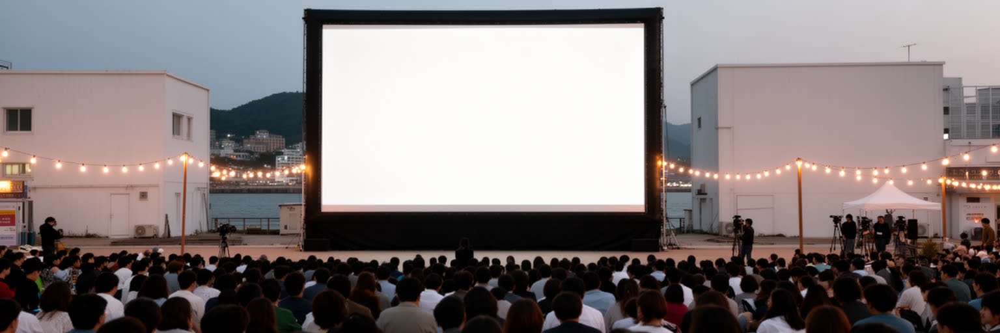
釜山は港湾と工業の都市であると同時に、韓国映画を世界へ開く文化都市でもあります。釜山国際映画祭は、海雲台やセンタムシティ周辺に映画人、批評家、観客、学生、配給会社を集め、アジア映画の発見と交流の場を作ってきました。映画の街という印象は、劇場やレッドカーペットだけではなく、映像教育、ロケ支援、観光、飲食、宿泊、ボランティア、翻訳、警備に支えられます。港町の開放性と避難都市の記憶は、釜山の物語性にも影響します。市場、路地、海岸、高層住宅、倉庫街は映画の背景になり、都市の現実をスクリーンへ運びます。一方で、文化イベントは日常の文化施設や若い作り手の生活条件と結びつかなければ、一時的な賑わいで終わります。釜山の文化力は、BIFFの国際性と、方言、食、ライブ音楽、大学、地域劇場、ローカル放送、SNSで広がる店や公演情報の厚みが共に残るところにあります。海を見せる観光都市だけでなく、物語を作る都市としての顔が重要です。映画祭の時期だけホテルや飲食店が賑わうのではなく、年間を通じて撮影、上映、批評、教育が根づくことが文化都市の基盤になります。若い作家が安く集まれる場所、観客が新しい作品に触れられる劇場、地域の記憶を撮れる路地があって初めて、国際イベントは都市の日常に根を下ろします。観客を育てる学校や公共上映も、文化の持続力を支える大切な土台です。
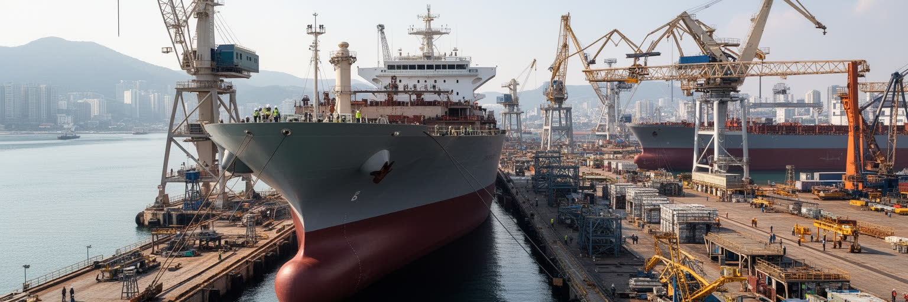
釜山の産業は港湾物流だけではありません。周辺の蔚山、昌原、巨済を含む南東圏には造船、自動車、機械、鉄鋼、化学、部品加工の集積があり、釜山はその労働力、大学、港、金融、サービスを束ねる都市として機能します。造船業は受注の波、国際競争、為替、技術革新に左右され、好況と不況が地域の雇用を大きく揺らします。大型船を造る現場には溶接、塗装、配管、設計、安全管理、下請けの技能が必要で、事故防止と労働条件は重要な論点です。機械工業や部品産業も、港からの輸出入と近いことで強みを持ちます。大学や職業教育は、熟練を次世代へ移す役割を担いますが、若者が製造現場を避ける傾向や人口減少は人材確保を難しくします。釜山大、東亜大、釜慶大などの教育機関は、海洋、工学、医療、文化の人材を地域へ送り出します。海辺の風景の裏には、鋼材、図面、作業服、夜勤、下請け企業の努力が続いています。脱炭素化や自動化は産業の形を変え、環境規制に対応できる技術も求められます。古い工場地帯を単に商業地へ変えるのか、修理、研究、部品、教育の場として使い直すのかで、地域の雇用は大きく変わります。港と工場を別々に見ず、技能を持つ人が働き続けられる都市環境として考える必要があります。熟練工の誇りと若い世代の進路をつなぐ地域社会の教育も欠かせません。
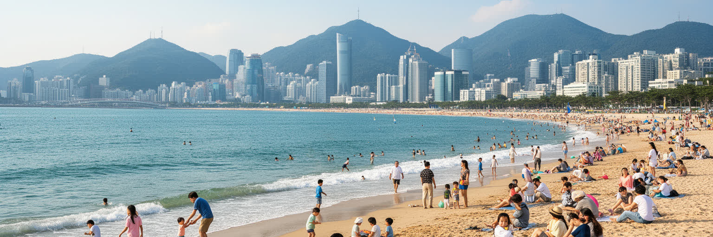
釜山観光の第一印象は海です。海雲台の砂浜、広安里の夜景、松島の海上散歩路、機張の海辺、龍宮寺の岩場は、韓国の大都市でありながら水際を近く感じさせます。温泉、百貨店、展望台、国際市場、甘川文化村、寺院を組み合わせると、短い滞在でも海岸、山腹、旧市街、新都心を移動できます。夜の海雲台ではホテルの灯、潮風、屋台の湯気、若者の音楽が重なり、広安里では橋の光と花火祭りが都市の祝祭性を見せます。観光の明るさは宿泊、飲食、清掃、交通、警備、案内、写真サービスに支えられ、繁忙期には住民の生活道路や海辺の静けさを圧迫します。砂浜の利用、海洋ごみ、騒音、短期宿泊、家賃上昇も論点です。釜山の観光は、海を消費するだけでなく、港町の労働、市場の生活、仏教寺院の信仰、丘陵住宅の記憶に触れられる点に価値があります。海辺の高層ホテルだけを見ればリゾート都市ですが、路地へ入れば暮らしの条件が見えます。観光の質は、訪れる人の満足と住む人の生活が両立するかで決まります。地下鉄やバスで複数の地区を巡れることは強みですが、混雑時の案内、歩道の安全、多言語対応が不足すれば体験は不安定になります。朝の市場、夕方の銭湯、野球観戦帰りの地下鉄、寺院へ向かう坂道を含めると、釜山の旅は海辺の休日から生活都市の読解へ変わります。海の楽しさを保つには、住民の静かな時間も守らなければなりません。
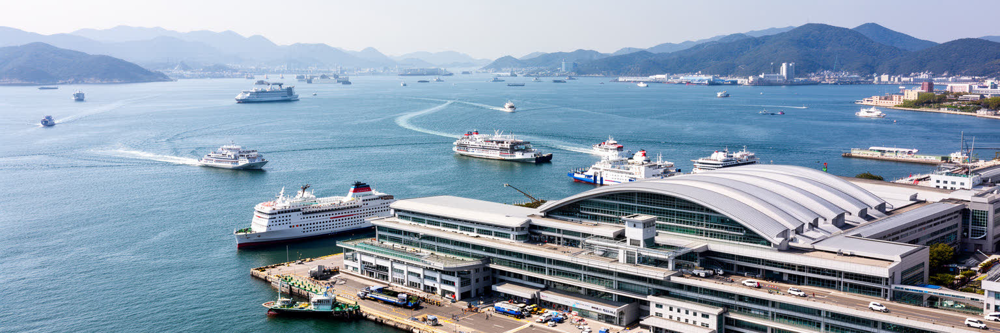
釜山は日本に最も近い韓国の大都市の一つであり、対馬、福岡、下関との海上交通を通じて長く往来を重ねてきました。交易、漁業、外交、植民地支配、戦争、引き揚げ、フェリー観光、留学、ビジネスが、海峡を近い通路にも難しい境界にもしてきました。釜山の近代都市化には日本統治期の港湾、鉄道、街区整備の影響があり、その記憶は便利なインフラと痛みを伴う歴史の両方として残ります。韓国戦争期には臨時首都として避難民を受け入れ、港は物資と人の入口になりました。日韓関係が政治的に揺れる時も、観光、物流、文化、親族、学術交流は保たれます。近さは理解を保証しませんが、無視できない接触を生みます。釜山を歩くことは、海峡を挟んだ都市同士の似た風景と異なる記憶を考えることでもあります。フェリーターミナル、旧市街、記念施設、市場の言葉には、近代東アジアの複雑な移動史が見えます。旅行者には短い航路でも、住民にとって海峡は労働、家族、教育、政治感情の通路です。観光の親しさが歴史の重さを消すわけではなく、歴史の重さが日常交流を止めるわけでもありません。釜山は、その緊張を港町の現実として抱えています。海峡の歴史を読む時は、国家同士の対立だけでなく、漁師、商人、学生、船員、移住者の小さな移動を重ねて見る必要があります。港の近さは、翻訳、通貨、食、記憶の違いを毎日調整する現場でもあります。
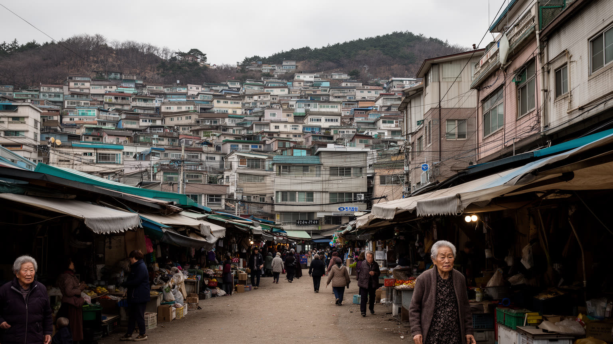
釜山は韓国の大都市の中でも高齢化と人口減少の課題が重く現れる都市です。若者は首都圏や新興産業の仕事を求めて移動し、旧市街や山腹住宅地では高齢者だけの世帯が増えています。坂道の多い地形は、買い物、通院、介護、ゴミ出し、冬の移動を難しくします。古い住宅の断熱、耐震、階段、狭い道路、駐車場不足は、生活の質と防災に関わります。再開発は便利な高層住宅を生む一方、長く住んだ人を家賃や補償の問題で押し出すことがあります。空き家や老朽建物をどう使い直すか、地域の店とバス路線をどう残すかは、都市の将来を左右します。釜山の魅力である路地と眺望は、住民にとっては毎日の負担でもあります。高齢化を観光地の懐かしさとして消費せず、医療、介護、移動、住宅改修、近所の見守りを含めて考える必要があります。子どもが安全に遊べる小さな広場、放課後の居場所、祖父母が休めるベンチは、坂の街では大きな社会基盤です。若者が戻るには、働く場だけでなく、手ごろな住まい、保育、文化施設、地域で挑戦できる小さな仕事が必要です。古い地区を低所得者だけの場所として放置すれば、災害時の被害も孤立も大きくなります。坂道に小型交通を入れること、空き家を地域施設や若者の住まいに転用すること、診療所と市場を残すことは、地味でも効果の大きい対策です。人口が減る都市では、量を増やす再開発より、残る生活を丁寧に支える設計が重要になります。
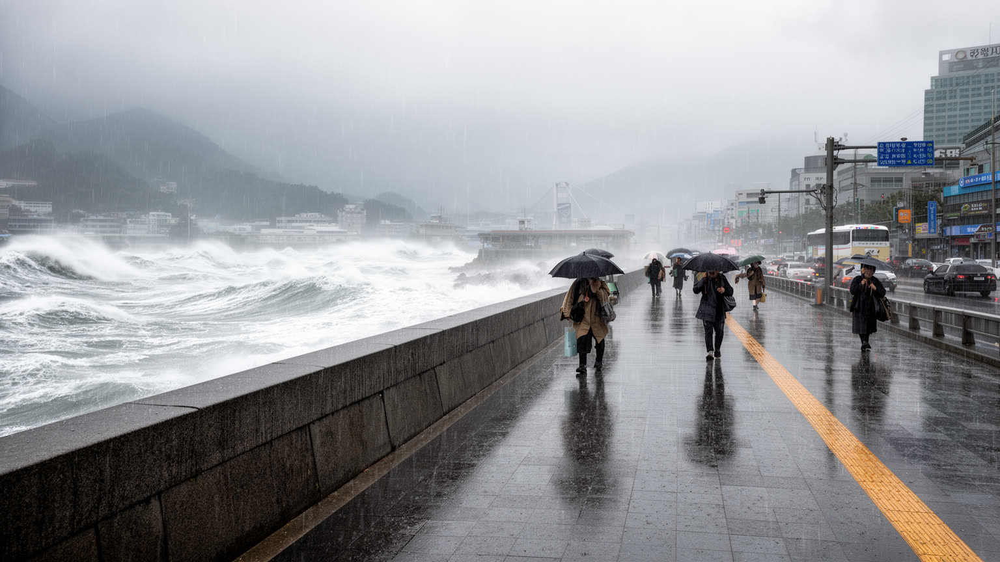
釜山の温暖な海洋性の気候は、海辺の観光と暮らしを支える一方、台風、高潮、豪雨、強風への備えを求めます。港湾施設、地下街、海岸道路、低地の住宅、河口部は、気候リスクに敏感です。台風が近づくと、船舶の避難、クレーンの停止、漁港の対策、地下空間の浸水防止、観光客への案内が一斉に必要になります。山が迫る地形では、短時間の豪雨が土砂災害や急な流出を起こすこともあります。夏の湿気は坂道の息苦しさ、魚市場の強い匂い、港で働く人の汗として感じられます。気候変動で海面上昇や強い雨の頻度が増えれば、港湾都市としての設計はさらに問われます。海岸の高層開発は魅力的な眺望を売りますが、避難路、非常電源、排水、公共空間の安全が伴わなければ脆弱です。暑い夏には屋外労働者、高齢者、観光客、登下校する子どもの熱中症対策も重要になります。釜山の海は都市の財産であり、同時にリスクの入口です。美しい海岸線を守るには、防波堤だけでなく、情報伝達、地域の訓練、緑地、雨水管理、弱い立場の人への支援を積み重ねる必要があります。気候リスクは年に一度の非常時だけでなく、保険料、住宅価格、漁業の収入、学校の休校、港の運航計画にも影響します。観光地ほど災害情報を多言語で出す必要があり、一人暮らしの高齢者には近所の確認が欠かせません。港、住宅、観光、福祉を結ぶ訓練が都市の回復力を高めます。
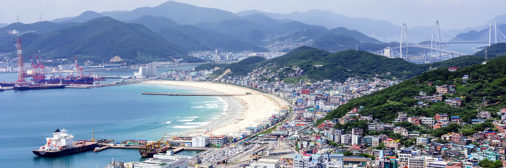
釜山を読むことは、韓国を首都圏の政治と消費だけでなく、海、港、山、労働、避難、交流から読むことです。巨大なコンテナ港は国家経済を支え、魚市場は日々の食を支え、造船と機械産業は南東圏の技能を支えます。BIFFと海水浴場は外から来る人に開かれた顔を作り、山腹住宅と旧市街は戦争避難と生活再建の記憶を残します。日韓海峡の近さは、親しみやすさと歴史の痛みを同時に運びます。釜山の強さは、物流の速度と生活の濃さが近距離で見える点にあります。ロッテ・ジャイアンツの野球観戦、Kリーグの応援、広安里の夜、屋台の湯気、ローカル放送の声も、港湾都市の生活感を厚くします。しかし高齢化、住宅更新、台風リスク、若者流出、産業転換、観光化は、都市の基盤を静かに揺らしています。港の競争力を保つだけでは、住民の暮らしは守れません。坂道を歩ける交通、働く人の安全、古い市場の継承、海岸の気候適応、若者が残れる仕事が必要です。釜山は周縁の港町ではなく、東アジアの移動と韓国社会の課題を同時に映す都市です。ソウル中心の物語では見えにくい韓国の産業、海洋、移住、地方の老いが、釜山では一つの街路に重なります。観光客にとっては開放的な海辺でも、住民にとっては仕事、家族、災害、記憶を支える生活圏です。釜山の価値は、港の規模や砂浜の美しさだけでなく、海峡に開きながら地域の日常を守れるかに表れます。